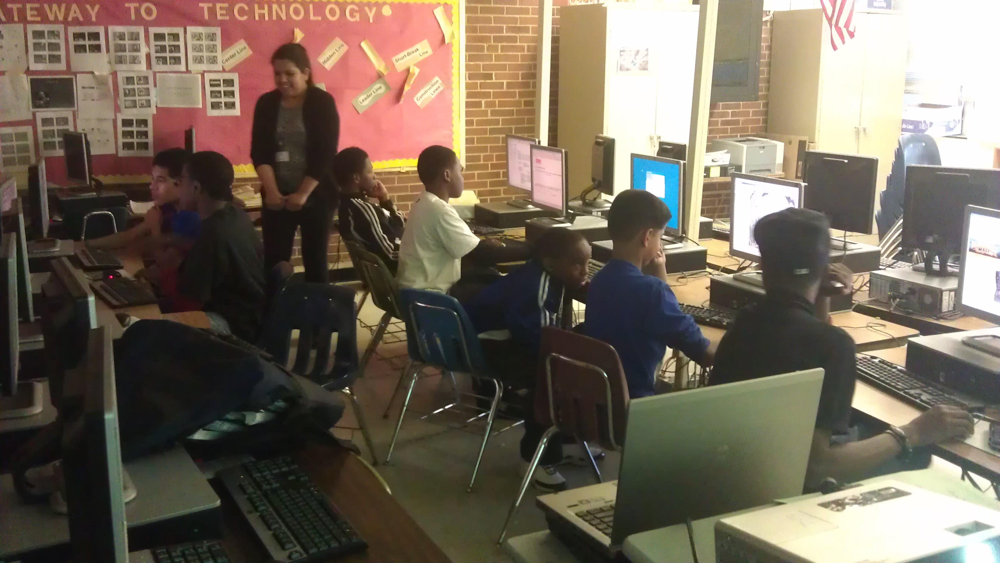

.: Leader/ Mentor :.
MAD Investigators - Julia Robinson Mathematics and Computing Festival
UNC Charlotte
March 29, 2014
Teaching Mobile App Development (MIT App Inventor). This program was held by Students & Technology in Academia, Research & Service (STARS). Led a team of 2 undergraduate students.
MAD Investigators - Citizen Schools
Martin Luther King Jr. Middle School
September to December 2013
Teaching Mobile App Development (MIT App Inventor). This program was held by Students & Technology in Academia, Research & Service (STARS). Led a team of 3 undergraduate students.
GameMaker - Citizen Schools
Martin Luther King Jr. Middle School
January to May 2013
Teaching the basics of designing video games (Scratch MIT). This program was held by Students in Programming, Robotics, And Computer Science (SPARCS) through the Students & Technology in Academia, Research & Service (STARS). Led a team of 6 undergraduate students.
UNCC STARS - NC Science Festival
UNC Charlotte
May 2013
Teaching the basics of designing video games (Scratch MIT). Representing the Students & Technology in Academia, Research & Service (STARS). Led a team of 13 undergraduate students.
UNCC STARS - Blacks at Microsoft Minority Student Day
Microsoft Charlotte
February 2013

Teaching the basics of designing video games (GameMaker). Representing the Students & Technology in Academia, Research & Service (STARS). Led a team of 5 undergraduate students.
Techno Club - McClintock Partners In Education (McPie)
McClintock Middle School
August to December 2012

Teaching middle school students how to program through GameMaker, Scratch, web design, MIT App Inventor and LEGO Mindstorm. This program was held by Students in Programming, Robotics, And Computer Science (SPARCS) through the Students & Technology in Academia, Research & Service (STARS). Led a team of 4 undergraduate students.
.: Participate :.
UNCC STARS - NC Science Festival
UNC Charlotte
April 13, 2014
Teaching the basics of designing video games (Scratch MIT). Representing the Students & Technology in Academia, Research & Service (STARS).
GameMaker - Citizen Schools
Martin Luther King Jr. Middle School
September to December 2013
Teaching the basics of designing video games (Scratch MIT). This program was held by Students in Programming, Robotics, And Computer Science (SPARCS) through the Students & Technology in Academia, Research & Service (STARS). Led a team of 6 undergraduate students.
Mobile App Investigators
UNC Charlotte Summer Camps
7/22 to 7/26, 2013
Teaching Mobile App Development (MIT App Inventor). This program was held by Students & Technology in Academia, Research & Service (STARS).
Teen Tech - Meck-Teens Rec Summer Camp
Martin Luther King Jr. Middle School
7/9 to 7/13, 2012
Teaching the basics of Windows App Development, Lego Mindstorms, and designing video games (Scratch MIT). This program was held by Students in Programming, Robotics, And Computer Science (SPARCS) through the Students & Technology in Academia, Research & Service (STARS).
Techno Club - McClintock Partners In Education (McPie)
McClintock Middle School
January to May 2012
Teaching middle school students how to program through GameMaker, Scratch, web design, MIT App Inventor and LEGO Mindstorm.
This program was held by Students in Programming, Robotics, And Computer Science (SPARCS) through the Students & Technology in Academia,
Research & Service (STARS).